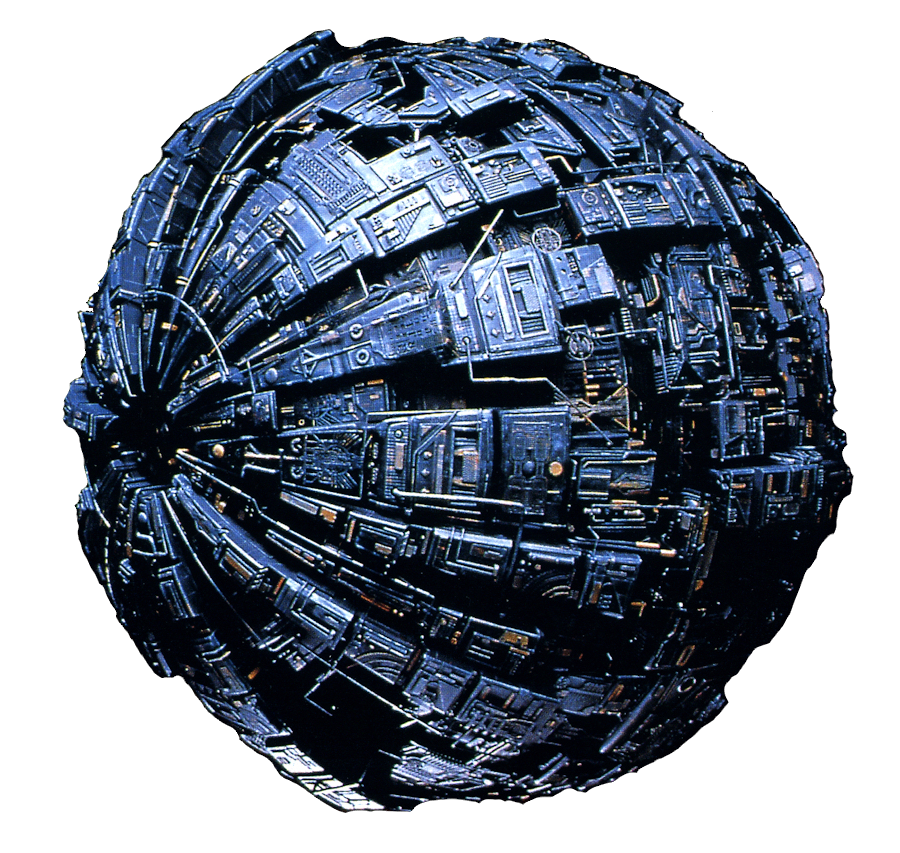

Resources
Images:
Bing "Space" Images for backgrounds
Original Starship image created by Robert Bonchune, Senior CGI Supervisor for Star Trek
Borg sphere 
Starfleet Insignia
Borrowed Code:
Zybooks Chapter 4 - Helped setup the navigation menu
HTML Responsive Web Design - Used information on meta to make the website more "mobile-friendly" by scaling